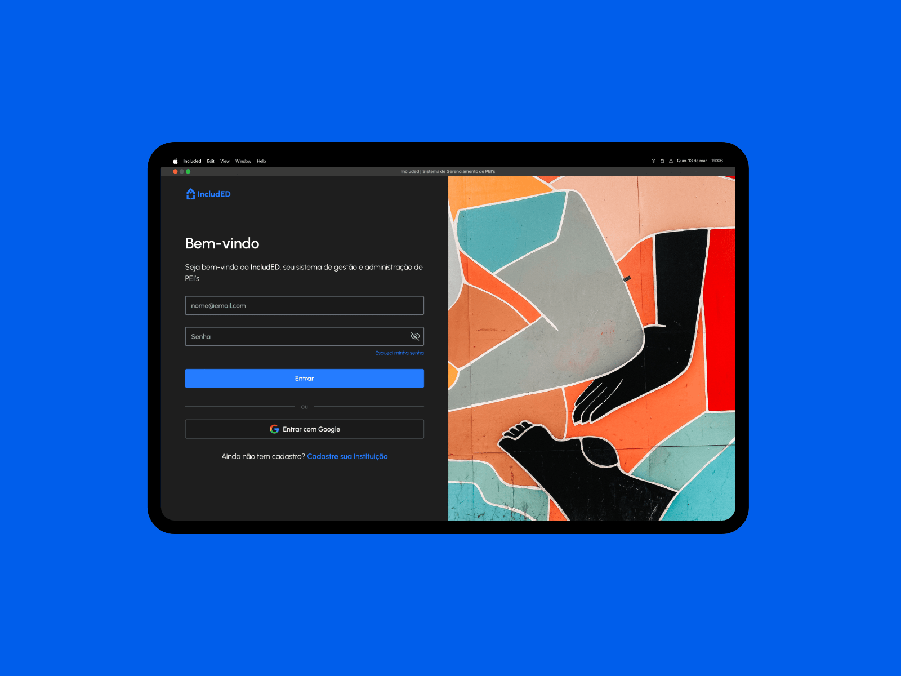
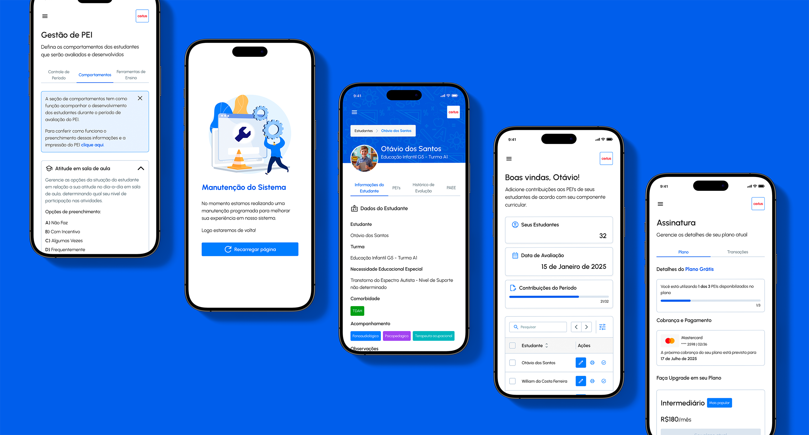

Neuroscience, education law, and design collide in a product that changes how Brazilian schools support inclusion students. Built with a neuropsychologist, a pedagogical consultant, and two developers, and deployed in schools across multiple states in under six months.

The Legal Mandate
In Brazil, any student with a disability, global developmental disorder, or high intellectual ability has a legal right to a PEI: an Individualized Educational Plan. This document must define the student's pedagogical goals, the curricular adaptations required, and a track record of progress over time. The law is unambiguous. The implementation is chaos.
Most schools produce PEIs in Word files, spreadsheets, or physical notebooks. Each teacher keeps their own version. There is no central record, no audit trail, no way for a coordinator to see which students are documented and which are not. When a student changes classes or teachers rotate, the history disappears.
The Human Cost
The person absorbing the most friction is the teacher. Writing a compliant PEI from scratch for each inclusion student, aligned to BNCC, reviewed with specialists, and signed off by the school, takes hours per student. Multiply that by ten or twenty students per class. The documentation burden is real enough that teachers often produce something that satisfies the form but not the function: a paper trail with no pedagogical depth.
IncludED was built to fix that. Not by simplifying the PEI, but by giving teachers the structure and tools to produce a meaningful one in a fraction of the time.
The problem isn't the law. The problem is that nobody gave teachers the infrastructure to follow it.
Why this project
"I have always been drawn to the intersection of how the brain works and how design communicates. IncludED is the project where those two stopped being separate interests."
Neuroscience has shaped how I think about UX for years: cognitive load, attention systems, the way working memory constraints map directly to interface decisions. When the opportunity to co-found PixelPunk arrived in October 2024, the product we chose to build was not an accident. A platform for inclusion students sits at the intersection of educational neuroscience, pedagogy, and design in a way that few products do.
The decision to build IncludED as our first product was also deliberate. This is a problem with real stakes: the students on the other end of every PEI created in our platform are children who depend on proper documentation to receive the support they are legally entitled to. That weight shaped every decision from day one.
How we built it
Step 01 · Foundation
Before any product screen existed, we built Accio: PixelPunk's design system. The decision was not about organization for its own sake. With two developers, a new codebase, and a tool targeting educators with no technical background, we needed every component to be accessible by default, consistent across contexts, and fast to implement via Storybook. Building the DS first meant every screen that followed was built faster, with fewer inconsistencies and no accessibility debt from the start.
Step 02 · Research
We ran a comprehensive research program guided by two education professionals with 20+ years of in-school experience. The scope covered every dimension of the problem: Brazilian inclusion legislation, BNCC architecture across all educational stages, how teachers build PEIs today, how neuropsychological assessments reach classrooms and what teachers can actually do with them, and what the AEE regulations require from specialized support professionals. This was not a discovery sprint. It was weeks of structured study.
Step 03 · Market
With domain knowledge established, we audited the existing tools landscape: generic school ERPs, Word templates, spreadsheet-based PEI builders, and broader edtech platforms. None had BNCC-aligned objective writing. None bridged the clinical-to-pedagogical gap. None addressed AEE-specific workflows. None were designed around inclusion at all. The market research didn't just confirm the gap: it defined precisely the requirements IncludED had to meet to be genuinely useful rather than another tool teachers would abandon.
Step 04 · Build
With the Design System in place and the domain knowledge established, screen production moved fast. Lead Product Designer, both developers, the pedagogical consultant, and the neuropsychologist all participated throughout the build phase: reviewing prototypes, flagging terminology, validating flows against real classroom workflows. AI was integrated across multiple product touchpoints. Less than six months after launch, IncludED was live in schools across multiple Brazilian states.
Research in practice
The research phase looked nothing like a typical discovery sprint. Sessions with the neuropsychologist and pedagogical consultant were structured around specific questions: how does a teacher actually receive a clinical report? What does "BNCC-aligned" mean for a student who cannot achieve a standard habilidade? How does a school coordinator track compliance across thirty PEIs at once?
Every session produced an artifact: a documented decision, a product rule, a terminology choice. The sessions shaped how the platform uses language, how it structures information, and which user roles can see what. The research was not input to the design. It was the design.
What the research covered
Each dimension of the research directly shaped a product decision. Nothing in IncludED was assumed. Every flow, every piece of terminology, every access rule was grounded in something specific the team learned before building.
Legislation
Brazilian Inclusion Law and PEI requirements
The Lei Brasileira de Inclusão (Lei 13.146/2015) establishes the legal right to a PEI for every student with a disability, global developmental disorder, or high intellectual ability. The research mapped exactly what a compliant PEI must contain, who is responsible for producing and signing it, how it must be reviewed across the school year, and what documentation a school must maintain. These requirements became IncludED's structural foundation, not optional features.
Curriculum
BNCC architecture and how it applies to inclusion
The BNCC organizes learning goals differently across each educational stage: campos de experiência for Educação Infantil, habilidades within competências for Ensino Fundamental and Médio. For an inclusion student, every pedagogical objective in the PEI must be anchored to BNCC descriptors, adapted to the student's profile. The team studied this architecture in detail with the pedagogical consultant to understand how to make BNCC navigation practical for teachers who need to select the right descriptors quickly, without reading the full document every time.
Classroom Reality
How teachers actually work with inclusion students
Sessions with the pedagogical consultant revealed the real daily workflow: a teacher managing twenty students may have four or five with PEIs, each requiring individual documentation, separate behavioral records, and progress tracking that coordinators can review. The consultant described how schools handle rotating teachers, mid-year student transfers, and the constant challenge of keeping records when each professional uses a different format. Every pain point she described became a product requirement.
Clinical Gap
What neuropsychological reports mean in the classroom
The neuropsychologist walked the team through how clinical assessments are structured: the diagnostic language neurologists, psychologists, and speech therapists use, why that language is inaccessible to most teachers, and what the pedagogical implications of each diagnosis type actually are. This session was the foundation of IncludED's report translation pipeline. Without understanding how clinical and pedagogical language diverge, the AI integration would have been superficial. The Adaptation Council feature was born directly from this research.
Regulatory Framework
AEE requirements and institutional oversight
The Atendimento Educacional Especializado (AEE) is a federally mandated specialized support service that operates alongside regular schooling. It has its own documentation requirements (the PAEE), its own professional category (Profissional AEE), and its own relationship to the student's classroom PEI. Understanding how MEC guidelines, state secretaries of education, and school coordinators interact around AEE compliance was essential to designing an access model where AEE professionals see the right students, and teachers see only their own contributions.
Market
Existing tools and the gaps none of them closed
The competitive landscape included generic school management ERPs, paper-based PEI templates promoted by secretaries of education, Word and Google Docs workflows, and a handful of edtech platforms targeting broader school administration. None had BNCC-aligned goal writing. None had a clinical report processing layer. None distinguished between classroom PEIs and AEE plans. None were designed around the teacher's documentation workflow. The audit confirmed that the opportunity was not incremental improvement over existing tools: it was a category that didn't exist yet.
What domain expertise changed
Pedagogical Expertise
20+ years in schools, in the room
The pedagogical consultant shaped how the platform handles teacher workflow: the distinction between PEI and PAEE, how goals are structured by BNCC stage, how behavioral observations should be recorded separately from pedagogical objectives. Without this knowledge, the platform would have merged what must stay separated, making it non-compliant and confusing for educators.
Neuropsychology
The clinical lens, translated for teachers
Clinical reports from neurologists, psychologists, and speech therapists arrive in language most teachers cannot act on. The neuropsychologist defined how IncludED should translate these documents: preserving diagnostic accuracy while reformulating the language into pedagogical guidance. The Adaptation Council feature was her direct contribution to the product.
Market Research
The gap the market confirmed
Research into existing tools revealed that school management platforms in Brazil were built for administration, not for inclusion. None had BNCC-aligned PEI workflows, AI-assisted goal writing, or multi-role collaboration between teachers, AEE professionals, and coordinators. The gap was not just present: it was wide.

What we built
Every module came from a specific gap identified in the expert sessions and market research. Nothing was built speculatively.
Core Module
PEI Creation and Management
The core of the platform. Administrators open a school period and the system automatically generates one PEI per active student. Teachers fill contributions by discipline; coordinators have full visibility. The PEI is always tied to a student, a class, and a school period. Never a floating document. It exports as PDF, consolidating all contributions, objectives, behaviors, and the PAEE into a single compliant document.
Core Module
BNCC Goal Mapping with AI
Teachers set pedagogical objectives linked to BNCC descriptors: habilidades for Ensino Fundamental and Ensino Médio, campos de experiência for Educação Infantil. The platform includes the full BNCC glossary indexed for navigation. For each BNCC descriptor selected, AI suggests a goal text tailored to the student's profile. The teacher edits; the AI starts. This reduced goal-writing time significantly while improving BNCC alignment across the board.
Core Module
Student Evolution and Progress Tracking
Objectives break into activities, each tracked quantitatively (numeric target and running progress) or qualitatively (achieved/not achieved). Teachers update progress, and the platform aggregates it by objective, discipline, and period, giving coordinators a longitudinal view of each student's development across the year. This turns subjective impressions into structured, auditable evidence.
Core Module
Clinical Report Processing
Administrators upload clinical reports from neurologists, psychologists, and speech therapists. The platform uses OCR for scanned documents and AI to translate medical language into pedagogical guidance. A teacher who receives a neurological evaluation can now read, in plain language, what it means for their classroom practice. Only accepted reports feed into the Adaptation Council, a deliberate quality gate designed with the neuropsychologist.
Core Module
PAEE: Specialized Support Plan
A module exclusive to AEE professionals: therapists and specialists who support students outside the regular classroom. The PAEE captures work axes (communication, cognition, autonomy, motor skills) with objectives, strategies, frequency, and session duration. AI suggests objectives and indicators for each axis based on the student profile. The PAEE appears in the exported PDF alongside the classroom PEI, but is never visible to regular teachers.
Core Module
Multi-Role Collaboration
Different users have fundamentally different relationships with the same student: the coordinator sees everything, the math teacher sees only their contribution, the AEE professional sees only the students assigned to them. This is not just a permissions model: it reflects how school teams actually function. Getting this information architecture right required multiple sessions with the pedagogical consultant to map real access patterns before any screen was built.
AI in IncludED
AI in IncludED was designed as a teaching assistant, not a replacement for teacher judgment. Every integration has a specific job, a defined output, and a human review gate.
Clinical
Report Translation and OCR
Medical language from clinical reports is rewritten in pedagogical terms teachers can act on. OCR handles scanned documents. The teacher reads, edits, and accepts before the content affects any student guidance.
Planning
Goal and Activity Suggestions
When a teacher selects a BNCC descriptor, AI drafts a goal text. When defining an activity, AI suggests a description based on the objective and student profile. The teacher always edits and confirms before anything is saved.
Synthesis
Adaptation Council and PEI Summary
Accepted reports are consolidated by AI into an Adaptation Council: practical classroom guidance for all of a student's teachers. AI also generates a full PEI text summary on demand for coordinator review and PDF export.
Outcomes
Domain depth is not optional. IncludED reinforced this at scale: a product this complex cannot be built from empathy alone. The expert sessions were not a formality. They were the foundation.